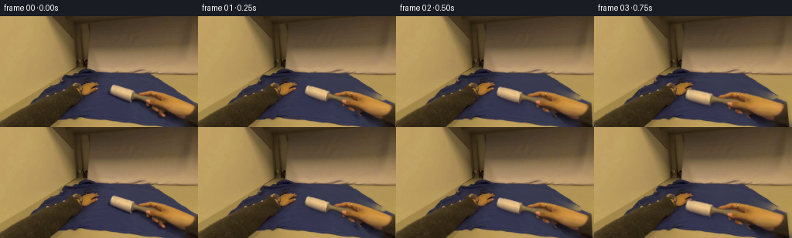
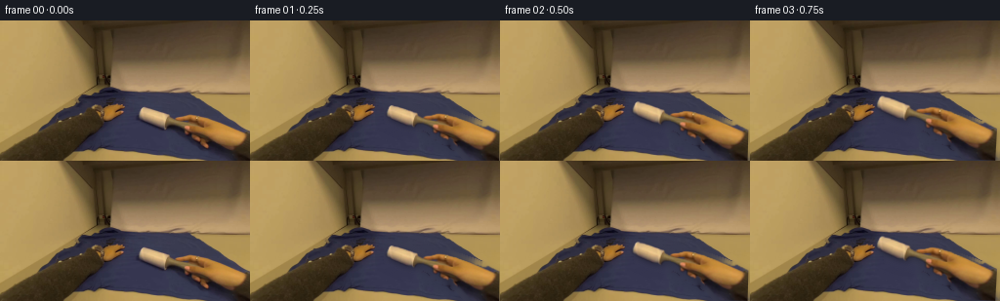
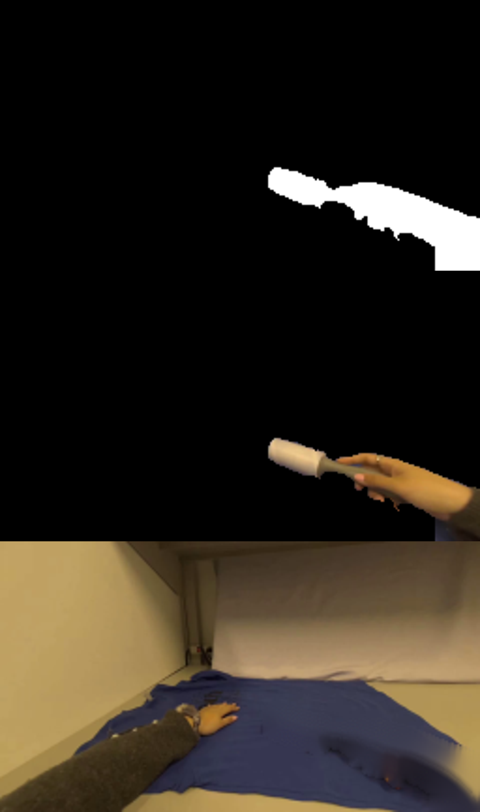
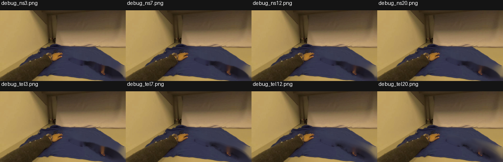
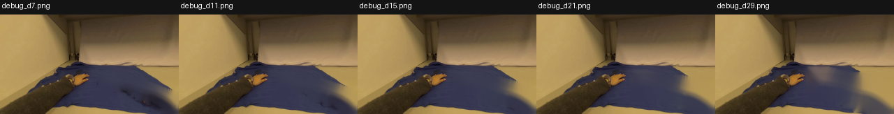
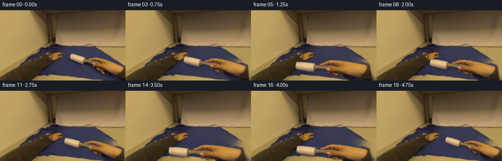
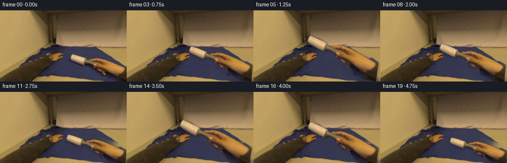
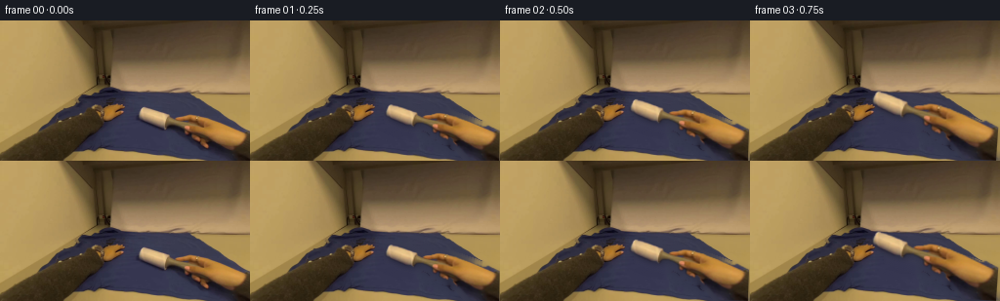
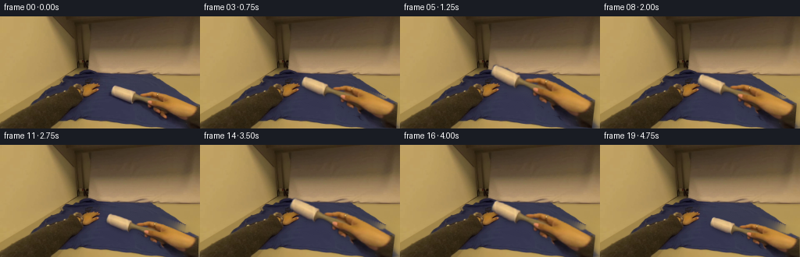

CODING AGENTS AS PIXEL WORLD MODELS
traex/GPT-5.6-Sol · common50_0015
点击播放 · 原生 RGB 像素
逐轮保存的候选
回放视频、检查图与代码变化。
每份候选均可单独播放。实际图片检查记录在下方工具轨迹中。
候选 01播放与检查图
点击播放 · 原生 RGB 像素


展开代码变化
--- 上一保存版本
+++ 本次保存版本
@@ -0,0 +1,148 @@
+"""Deterministic image-to-video synthesis for the lint-roller cleaning action.
+
+The source view already contains the complete actor and tool. We isolate that
+connected foreground, reconstruct the small area beneath it, and articulate it
+about the off-screen wrist. This preserves the source's real photographic
+appearance while producing two smooth, contact-following cleaning strokes.
+"""
+from pathlib import Path
+import cv2
+import numpy as np
+from PIL import Image
+import artifact_io
+
+CASE_DIR = Path(__file__).resolve().parent
+W, H = 256, 144
+
+
+def extract_right_hand_and_roller(bgr):
+ """GrabCut initialized from hand-authored geometric priors for this frame."""
+ gc = np.full((H, W), cv2.GC_BGD, np.uint8)
+
+ # One loose connected envelope: roller, fingers, hand, forearm, cuff.
+ probable = np.array([
+ (139, 87), (153, 87), (168, 93), (177, 97), (187, 97),
+ (193, 95), (202, 96), (211, 98), (220, 101), (230, 105),
+ (241, 108), (252, 112), (255, 114), (255, 143), (229, 143),
+ (218, 132), (207, 123), (197, 120), (188, 115), (177, 112),
+ (167, 110), (157, 108), (147, 105), (139, 100)
+ ], np.int32)
+ cv2.fillPoly(gc, [probable], cv2.GC_PR_FGD)
+
+ # High-confidence pieces prevent similarly colored shirt/background areas
+ # from entering the matte.
+ roller = np.array([(145,89),(158,91),(172,98),(169,107),(156,106),(142,99)], np.int32)
+ palm_arm = np.array([
+ (189,99),(202,97),(215,102),(229,107),(243,111),(253,116),
+ (255,130),(249,134),(237,130),(225,125),(214,120),(204,117),
+ (196,116),(189,110)
+ ], np.int32)
+ cuff = np.array([(247,127),(255,125),(255,143),(230,143)], np.int32)
+ cv2.fillPoly(gc, [roller, palm_arm, cuff], cv2.GC_FGD)
+ cv2.circle(gc, (193,108), 3, cv2.GC_FGD, -1)
+
+ bg_model = np.zeros((1,65), np.float64)
+ fg_model = np.zeros((1,65), np.float64)
+ cv2.grabCut(bgr, gc, None, bg_model, fg_model, 8, cv2.GC_INIT_WITH_MASK)
+ hard = np.where((gc == cv2.GC_FGD) | (gc == cv2.GC_PR_FGD), 255, 0).astype(np.uint8)
+
+ # Light feathering retains real antialiased hair/tool boundaries.
+ alpha = cv2.GaussianBlur(hard, (0,0), 0.62).astype(np.float32) / 255.0
+ return hard, alpha
+
+
+def make_clean_plate(bgr, hard_mask):
+ """Reconstruct blue cloth hidden by the initial right hand/tool."""
+ # The larger halo prevents skin-colored edge pixels from leaking into the
+ # fill. Telea follows the shirt's nearby low-frequency folds convincingly.
+ hole = cv2.dilate(hard_mask, np.ones((11,11), np.uint8), iterations=1)
+ plate = cv2.inpaint(bgr, hole, 12, cv2.INPAINT_TELEA)
+
+ # Suppress the final tiny inpaint ripples only inside the repaired region,
+ # while retaining all original shirt texture everywhere else.
+ smooth = cv2.bilateralFilter(plate, 7, 25, 25)
+ inner = cv2.GaussianBlur((hole > 0).astype(np.float32), (0,0), 2.2)[...,None]
+ plate = np.clip(plate*(1-inner*0.20) + smooth*(inner*0.20), 0, 255).astype(np.uint8)
+ return plate
+
+
+def transform_for_progress(progress, band_offset):
+ """Perspective-like extension around the off-screen wrist."""
+ # Scaling about an off-image wrist makes extension read as reaching farther
+ # over the shirt; rotation keeps the roller pressed to the receding cloth.
+ pivot = (263.0, 140.0)
+ angle = 14.0 * progress
+ scale = 1.0 + 0.37 * progress
+ M = cv2.getRotationMatrix2D(pivot, angle, scale)
+ # A little extra reach and a new adjacent strip on the second pass.
+ M[0,2] -= 7.0 * progress
+ M[1,2] += band_offset
+ return M
+
+
+def synthesize():
+ rgb0 = np.asarray(Image.open(CASE_DIR / 'first_frame.png').convert('RGB'))
+ assert rgb0.shape == (H,W,3)
+ bgr0 = cv2.cvtColor(rgb0, cv2.COLOR_RGB2BGR)
+ hard, alpha = extract_right_hand_and_roller(bgr0)
+ clean = make_clean_plate(bgr0, hard)
+
+ # Two complete rolling passes with eased acceleration at each reversal.
+ progress = np.array([
+ 0.00, 0.07, 0.20, 0.39, 0.62, 0.84, 1.00,
+ 0.82, 0.55, 0.27, 0.07,
+ 0.19, 0.42, 0.68, 0.89, 1.00,
+ 0.81, 0.54, 0.27, 0.04
+ ], np.float32)
+ # The hand shifts down only gradually, so the second pass cleans a nearby
+ # lane rather than tracing exactly the same pixels.
+ bands = np.array([0,0,0,0,0,0,0, 1,2,3,4, 5,6,7,8,8, 8,7,6,5], np.float32)
+
+ source = bgr0.astype(np.float32)
+ frames = []
+ for i, (p, band) in enumerate(zip(progress, bands)):
+ if i == 0:
+ # Contract requirement: byte-identical source frame.
+ frames.append(rgb0.copy())
+ continue
+
+ M = transform_for_progress(float(p), float(band))
+ warped = cv2.warpAffine(source, M, (W,H), flags=cv2.INTER_CUBIC,
+ borderMode=cv2.BORDER_REPLICATE)
+ wa = cv2.warpAffine(alpha, M, (W,H), flags=cv2.INTER_LINEAR,
+ borderMode=cv2.BORDER_CONSTANT, borderValue=0)
+ wa = np.clip(wa, 0, 1)
+
+ frame = clean.astype(np.float32)
+
+ # Soft contact/occlusion shadow, strongest around the roller's path.
+ sh = cv2.GaussianBlur(wa, (0,0), 3.0)
+ sh = np.roll(sh, shift=(3,2), axis=(0,1))
+ # Avoid numpy roll wrapping along the top/left edge.
+ sh[:3,:] = 0; sh[:,:2] = 0
+ frame *= (1.0 - (0.17 + 0.04*p) * sh[...,None])
+
+ # A restrained cloth-pressure shade under the roller itself improves
+ # the impression of physical contact without inventing new objects.
+ roller_src = np.zeros((H,W), np.uint8)
+ cv2.ellipse(roller_src, (157,98), (17,7), 20, 0, 360, 255, -1)
+ roller_contact = cv2.warpAffine(roller_src, M, (W,H), flags=cv2.INTER_LINEAR,
+ borderMode=cv2.BORDER_CONSTANT) / 255.0
+ contact = cv2.GaussianBlur(roller_contact.astype(np.float32), (0,0), 2.0)
+ contact = np.roll(contact, shift=(3,1), axis=(0,1)); contact[:3,:]=0; contact[:,:1]=0
+ frame *= (1.0 - 0.09*contact[...,None])
+
+ # Real source pixels remain the visual focus.
+ a3 = wa[...,None]
+ frame = warped*a3 + frame*(1-a3)
+ frame = np.clip(frame, 0, 255).astype(np.uint8)
+ frames.append(cv2.cvtColor(frame, cv2.COLOR_BGR2RGB))
+
+ out = np.stack(frames, axis=0).astype(np.uint8)
+ assert out.shape == (20,H,W,3)
+ assert np.array_equal(out[0], rgb0)
+ return out
+
+
+if __name__ == '__main__':
+ artifact_io.save(synthesize(), CASE_DIR)
候选 02播放与检查图
点击播放 · 原生 RGB 像素

展开代码变化
--- 上一保存版本
+++ 本次保存版本
@@ -71,7 +71,7 @@
# Scaling about an off-image wrist makes extension read as reaching farther
# over the shirt; rotation keeps the roller pressed to the receding cloth.
pivot = (263.0, 140.0)
- angle = 14.0 * progress
+ angle = -10.0 * progress
scale = 1.0 + 0.37 * progress
M = cv2.getRotationMatrix2D(pivot, angle, scale)
# A little extra reach and a new adjacent strip on the second pass.
候选 03播放与检查图
点击播放 · 原生 RGB 像素


展开代码变化
--- 上一保存版本
+++ 本次保存版本
@@ -71,11 +71,11 @@
# Scaling about an off-image wrist makes extension read as reaching farther
# over the shirt; rotation keeps the roller pressed to the receding cloth.
pivot = (263.0, 140.0)
- angle = -10.0 * progress
- scale = 1.0 + 0.37 * progress
+ angle = -8.0 * progress
+ scale = 1.0 + 0.24 * progress
M = cv2.getRotationMatrix2D(pivot, angle, scale)
# A little extra reach and a new adjacent strip on the second pass.
- M[0,2] -= 7.0 * progress
+ M[0,2] -= 10.0 * progress
M[1,2] += band_offset
return M
可观测工具轨迹
实际执行的命令与返回图片。
命令 1exit 0
/bin/bash -lc "cat prompt.txt && printf '\\n---RULES---\\n' && cat GENERATION_RULES.md"
命令 2exit 0
/bin/bash -lc "find . -maxdepth 2 -type f -printf '%p\\n' | sort"
命令 3exit 0
/bin/bash -lc "cat task_spec.json; sed -n '1,240p' artifact_io.py; python - <<'PY'
from PIL import Image
im=Image.open('first_frame.png')
print(im.mode, im.size)
PY"命令 4exit 0
/bin/bash -lc "python - <<'PY'
try:
import cv2; print('cv2',cv2.__version__)
except Exception as e: print('no cv2',e)
try:
import scipy; print('scipy',scipy.__version__)
except Exception as e: print('no scipy',e)
PY"命令 5exit 1
/bin/bash -lc "cat > /tmp/proto.py <<'PY'
import cv2, numpy as np
from PIL import Image
im=cv2.imread('first_frame.png')
h,w=im.shape[:2]
# GC labels
gc=np.full((h,w),cv2.GC_BGD,np.uint8)
outer=np.array([(140,88),(154,88),(168,94),(176,98),(186,98),(192,96),(200,96),(208,98),(218,101),(226,105),(237,108),(247,112),(255,115),(255,143),(230,143),(218,132),(207,123),(197,120),(189,115),(177,111),(168,110),(158,108),(148,105),(140,100)],np.int32)
cv2.fillPoly(gc,[outer],cv2.GC_PR_FGD)
# sure fg roller core
cv2.fillPoly(gc,[np.array([(145,90),(158,91),(171,98),(169,107),(156,106),(143,99)],np.int32)],cv2.GC_FGD)
# skin hand and arm central
cv2.fillPoly(gc,[np.array([(190,99),(203,98),(216,103),(229,108),(243,112),(253,117),(255,131),(249,134),(236,130),(225,125),(215,120),(205,117),(197,116),(190,110)],np.int32)],cv2.GC_FGD)
# fingers central
cv2.circle(gc,(193,108),3,cv2.GC_FGD,-1)
# sleeve
cv2.fillPoly(gc,[np.array([(248,128),(255,126),(255,143),(232,143)],np.int32)],cv2.GC_FGD)
bgd=np.zeros((1,65),np.float64); fgd=np.zeros((1,65),np.float64)
cv2.grabCut(im,gc,None,bgd,fgd,8,cv2.GC_INIT_WITH_MASK)
mask=np.where((gc==1)|(gc==3),255,0).astype(np.uint8)
# Ensure roller shape and central skin are retained
# soft alpha
alpha=cv2.GaussianBlur(mask,(0,0),.65)
cv2.imwrite('debug_mask.png',mask)
vis=np.zeros_like(im); vis[:]=[0,0,0]; vis[mask>0]=im[mask>0]
cv2.imwrite('debug_cut.png',vis)
# bg inpaint
hole=cv2.dilate(mask,np.ones((7,7),np.uint8),iterations=1)
bg=cv2.inpaint(im,hole,7,cv2.INPAINT_TELEA)
cv2.imwrite('debug_bg.png',bg)
PY
python /tmp/proto.py
python - <<'PY'
from PIL import Image
ims=[Image.open(x).resize((768,432)) for x in ['debug_mask.png','debug_cut.png','debug_bg.png']]
out=Image.new('RGB',(768,1296));
for i,im in enumerate(ims): out.paste(im,(0,i*432))
out.save('debug_combo.png')
PY"命令 6exit 0
/bin/bash -lc "cat > .tmp/proto.py <<'PY'
import cv2, numpy as np
im=cv2.imread('first_frame.png'); h,w=im.shape[:2]
gc=np.full((h,w),cv2.GC_BGD,np.uint8)
outer=np.array([(140,88),(154,88),(168,94),(176,98),(186,98),(192,96),(200,96),(208,98),(218,101),(226,105),(237,108),(247,112),(255,115),(255,143),(230,143),(218,132),(207,123),(197,120),(189,115),(177,111),(168,110),(158,108),(148,105),(140,100)],np.int32)
cv2.fillPoly(gc,[outer],cv2.GC_PR_FGD)
cv2.fillPoly(gc,[np.array([(145,90),(158,91),(171,98),(169,107),(156,106),(143,99)],np.int32)],cv2.GC_FGD)
cv2.fillPoly(gc,[np.array([(190,99),(203,98),(216,103),(229,108),(243,112),(253,117),(255,131),(249,134),(236,130),(225,125),(215,120),(205,117),(197,116),(190,110)],np.int32)],cv2.GC_FGD)
cv2.circle(gc,(193,108),3,cv2.GC_FGD,-1)
cv2.fillPoly(gc,[np.array([(248,128),(255,126),(255,143),(232,143)],np.int32)],cv2.GC_FGD)
bgd=np.zeros((1,65),np.float64); fgd=np.zeros((1,65),np.float64)
cv2.grabCut(im,gc,None,bgd,fgd,8,cv2.GC_INIT_WITH_MASK)
mask=np.where((gc==1)|(gc==3),255,0).astype(np.uint8)
cv2.imwrite('debug_mask.png',mask)
vis=np.zeros_like(im); vis[mask>0]=im[mask>0]; cv2.imwrite('debug_cut.png',vis)
hole=cv2.dilate(mask,np.ones((7,7),np.uint8),iterations=1)
bg=cv2.inpaint(im,hole,7,cv2.INPAINT_TELEA); cv2.imwrite('debug_bg.png',bg)
PY
python .tmp/proto.py
python - <<'PY'
from PIL import Image
ims=[Image.open(x).convert('RGB').resize((768,432)) for x in ['debug_mask.png','debug_cut.png','debug_bg.png']]
out=Image.new('RGB',(768,1296));
for i,im in enumerate(ims): out.paste(im,(0,i*432))
out.save('debug_combo.png')
PY"命令 7exit 0
/bin/bash -lc "python - <<'PY'
import cv2,numpy as np
im=cv2.imread('first_frame.png'); m=cv2.imread('debug_mask.png',0); hole=cv2.dilate(m,np.ones((5,5),np.uint8),iterations=1)
for meth,n in [(cv2.INPAINT_NS,'ns'),(cv2.INPAINT_TELEA,'tel')]:
for r in [3,7,12,20]: cv2.imwrite(f'debug_{n}{r}.png',cv2.inpaint(im,hole,r,meth))
PY
python - <<'PY'
from PIL import Image,ImageDraw
names=['debug_ns3.png','debug_ns7.png','debug_ns12.png','debug_ns20.png','debug_tel3.png','debug_tel7.png','debug_tel12.png','debug_tel20.png']
out=Image.new('RGB',(1024,330),(20,20,20));d=ImageDraw.Draw(out)
for i,n in enumerate(names):
x=i%4*256;y=i//4*165; d.text((x+3,y),n,fill='white');out.paste(Image.open(n),(x,y+21))
out.save('inpaint_compare.png')
PY"命令 8exit 0
/bin/bash -lc "python - <<'PY'
import cv2,numpy as np
im=cv2.imread('first_frame.png');m=cv2.imread('debug_mask.png',0)
for d in [7,11,15,21,29]:
hole=cv2.dilate(m,np.ones((d,d),np.uint8),iterations=1)
cv2.imwrite(f'debug_d{d}.png',cv2.inpaint(im,hole,12,cv2.INPAINT_TELEA))
PY
python - <<'PY'
from PIL import Image,ImageDraw
ns=[f'debug_d{x}.png' for x in [7,11,15,21,29]]
out=Image.new('RGB',(1280,165),(20,20,20));d=ImageDraw.Draw(out)
for i,n in enumerate(ns):d.text((i*256+3,2),n,fill='white');out.paste(Image.open(n),(i*256,21))
out.save('dilate_compare.png')
PY"命令 9exit 0
/bin/bash -lc "cat > generate.py <<'PY'
\"\"\"Deterministic image-to-video synthesis for the lint-roller cleaning action.
The source view already contains the complete actor and tool. We isolate that
connected foreground, reconstruct the small area beneath it, and articulate it
about the off-screen wrist. This preserves the source's real photographic
appearance while producing two smooth, contact-following cleaning strokes.
\"\"\"
from pathlib import Path
import cv2
import numpy as np
from PIL import Image
import artifact_io
CASE_DIR = Path(__file__).resolve().parent
W, H = 256, 144
def extract_right_hand_and_roller(bgr):
\"\"\"GrabCut initialized from hand-authored geometric priors for this frame.\"\"\"
gc = np.full((H, W), cv2.GC_BGD, np.uint8)
# One loose connected envelope: roller, fingers, hand, forearm, cuff.
probable = np.array([
(139, 87), (153, 87), (168, 93), (177, 97), (187, 97),
(193, 95), (202, 96), (211, 98), (220, 101), (230, 105),
(241, 108), (252, 112), (255, 114), (255, 143), (229, 143),
(218, 132), (207, 123), (197, 120), (188, 115), (177, 112),
(167, 110), (157, 108), (147, 105), (139, 100)
], np.int32)
cv2.fillPoly(gc, [probable], cv2.GC_PR_FGD)
# High-confidence pieces prevent similarly colored shirt/background areas
# from entering the matte.
roller = np.array([(145,89),(158,91),(172,98),(169,107),(156,106),(142,99)], np.int32)
palm_arm = np.array([
(189,99),(202,97),(215,102),(229,107),(243,111),(253,116),
(255,130),(249,134),(237,130),(225,125),(214,120),(204,117),
(196,116),(189,110)
], np.int32)
cuff = np.array([(247,127),(255,125),(255,143),(230,143)], np.int32)
cv2.fillPoly(gc, [roller, palm_arm, cuff], cv2.GC_FGD)
cv2.circle(gc, (193,108), 3, cv2.GC_FGD, -1)
bg_model = np.zeros((1,65), np.float64)
fg_model = np.zeros((1,65), np.float64)
cv2.grabCut(bgr, gc, None, bg_model, fg_model, 8, cv2.GC_INIT_WITH_MASK)
hard = np.where((gc == cv2.GC_FGD) | (gc == cv2.GC_PR_FGD), 255, 0).astype(np.uint8)
# Light feathering retains real antialiased hair/tool boundaries.
alpha = cv2.GaussianBlur(hard, (0,0), 0.62).astype(np.float32) / 255.0
return hard, alpha
def make_clean_plate(bgr, hard_mask):
\"\"\"Reconstruct blue cloth hidden by the initial right hand/tool.\"\"\"
# The larger halo prevents skin-colored edge pixels from leaking into the
# fill. Telea follows the shirt's nearby low-frequency folds convincingly.
hole = cv2.dilate(hard_mask, np.ones((11,11), np.uint8), iterations=1)
plate = cv2.inpaint(bgr, hole, 12, cv2.INPAINT_TELEA)
# Suppress the final tiny inpaint ripples only inside the repaired region,
# while retaining all original shirt texture everywhere else.
smooth = cv2.bilateralFilter(plate, 7, 25, 25)
inner = cv2.GaussianBlur((hole > 0).astype(np.float32), (0,0), 2.2)[...,None]
plate = np.clip(plate*(1-inner*0.20) + smooth*(inner*0.20), 0, 255).astype(np.uint8)
return plate
def transform_for_progress(progress, band_offset):
\"\"\"Perspective-like extension around the off-screen wrist.\"\"\"
# Scaling about an off-image wrist makes extension read as reaching farther
# over the shirt; rotation keeps the roller pressed to the receding cloth.
pivot = (263.0, 140.0)
angle = 14.0 * progress
scale = 1.0 + 0.37 * progress
M = cv2.getRotationMatrix2D(pivot, angle, scale)
# A little extra reach and a new adjacent strip on the second pass.
M[0,2] -= 7.0 * progress
M[1,2] += band_offset
return M
def synthesize():
rgb0 = np.asarray(Image.open(CASE_DIR / 'first_frame.png').convert('RGB'))
assert rgb0.shape == (H,W,3)
bgr0 = cv2.cvtColor(rgb0, cv2.COLOR_RGB2BGR)
hard, alpha = extract_right_hand_and_roller(bgr0)
clean = make_clean_plate(bgr0, hard)
# Two complete rolling passes with eased acceleration at each reversal.
progress = np.array([
0.00, 0.07, 0.20, 0.39, 0.62, 0.84, 1.00,
0.82, 0.55, 0.27, 0.07,
0.19, 0.42, 0.68, 0.89, 1.00,
0.81, 0.54, 0.27, 0.04
], np.float32)
# The hand shifts down only gradually, so the second pass cleans a nearby
# lane rather than tracing exactly the same pixels.
bands = np.array([0,0,0,0,0,0,0, 1,2,3,4, 5,6,7,8,8, 8,7,6,5], np.float32)
source = bgr0.astype(np.float32)
frames = []
for i, (p, band) in enumerate(zip(progress, bands)):
if i == 0:
# Contract requirement: byte-identical source frame.
frames.append(rgb0.copy())
continue
M = transform_for_progress(float(p), float(band))
warped = cv2.warpAffine(source, M, (W,H), flags=cv2.INTER_CUBIC,
borderMode=cv2.BORDER_REPLICATE)
wa = cv2.warpAffine(alpha, M, (W,H), flags=cv2.INTER_LINEAR,
borderMode=cv2.BORDER_CONSTANT, borderValue=0)
wa = np.clip(wa, 0, 1)
frame = clean.astype(np.float32)
# Soft contact/occlusion shadow, strongest around the roller's path.
sh = cv2.GaussianBlur(wa, (0,0), 3.0)
sh = np.roll(sh, shift=(3,2), axis=(0,1))
# Avoid numpy roll wrapping along the top/left edge.
sh[:3,:] = 0; sh[:,:2] = 0
frame *= (1.0 - (0.17 + 0.04*p) * sh[...,None])
# A restrained cloth-pressure shade under the roller itself improves
# the impression of physical contact without inventing new objects.
roller_src = np.zeros((H,W), np.uint8)
cv2.ellipse(roller_src, (157,98), (17,7), 20, 0, 360, 255, -1)
roller_contact = cv2.warpAffine(roller_src, M, (W,H), flags=cv2.INTER_LINEAR,
borderMode=cv2.BORDER_CONSTANT) / 255.0
contact = cv2.GaussianBlur(roller_contact.astype(np.float32), (0,0), 2.0)
contact = np.roll(contact, shift=(3,1), axis=(0,1)); contact[:3,:]=0; contact[:,:1]=0
frame *= (1.0 - 0.09*contact[...,None])
# Real source pixels remain the visual focus.
a3 = wa[...,None]
frame = warped*a3 + frame*(1-a3)
frame = np.clip(frame, 0, 255).astype(np.uint8)
frames.append(cv2.cvtColor(frame, cv2.COLOR_BGR2RGB))
out = np.stack(frames, axis=0).astype(np.uint8)
assert out.shape == (20,H,W,3)
assert np.array_equal(out[0], rgb0)
return out
if __name__ == '__main__':
artifact_io.save(synthesize(), CASE_DIR)
PY
python generate.py
python - <<'PY'
import numpy as np
from PIL import Image
z=np.load('pixels.npz')['pixels']
a=np.array(Image.open('first_frame.png'))
r=((z[:,:,0]>>16)&255).astype('uint8');g=((z[:,:,0]>>8)&255).astype('uint8');b=(z[:,:,0]&255).astype('uint8')
print('tensor',z.shape,z.dtype,'frame0 exact',np.array_equal(np.dstack([r,g,b]),a))
PY"命令 10exit 0
/bin/bash -lc "cp inspection.png inspection_v1.png
python - <<'PY'
p='generate.py'
s=open(p).read().replace('angle = 14.0 * progress','angle = -10.0 * progress')
open(p,'w').write(s)
PY
python generate.py"命令 11exit 0
/bin/bash -lc "python - <<'PY'
p='generate.py'
s=open(p).read().replace('angle = -10.0 * progress','angle = -8.0 * progress').replace('scale = 1.0 + 0.37 * progress','scale = 1.0 + 0.24 * progress').replace('M[0,2] -= 7.0 * progress','M[0,2] -= 10.0 * progress')
open(p,'w').write(s)
PY
python generate.py
python - <<'PY'
from pathlib import Path
for pat in ['debug_*.png','inpaint_compare.png','dilate_compare.png','inspection_v1.png']:
for f in Path('.').glob(pat): f.unlink()
from PIL import Image
import numpy as np
ims=sorted(Path('frames').glob('*.png'))
assert len(ims)==20
arr=np.stack([np.array(Image.open(x).convert('RGB')) for x in ims])
src=np.array(Image.open('first_frame.png').convert('RGB'))
print('final',arr.shape,arr.dtype,'frame0_exact=',np.array_equal(arr[0],src))
print('mean consecutive changes=', [int(np.mean(np.abs(arr[i].astype(int)-arr[i-1].astype(int)))) for i in range(1,20)])
print('outputs',Path('pixels.npz').stat().st_size,Path('index.html').stat().st_size)
PY"视觉工具实际返回图片 1

视觉工具实际返回图片 2

视觉工具实际返回图片 3

视觉工具实际返回图片 4

视觉工具实际返回图片 5

视觉工具实际返回图片 6

视觉工具实际返回图片 7

视觉工具实际返回图片 8

保存候选 3 份；完成命令 11 次；可验证图片返回 8 张。原始 API 响应与完整日志保留在本地。